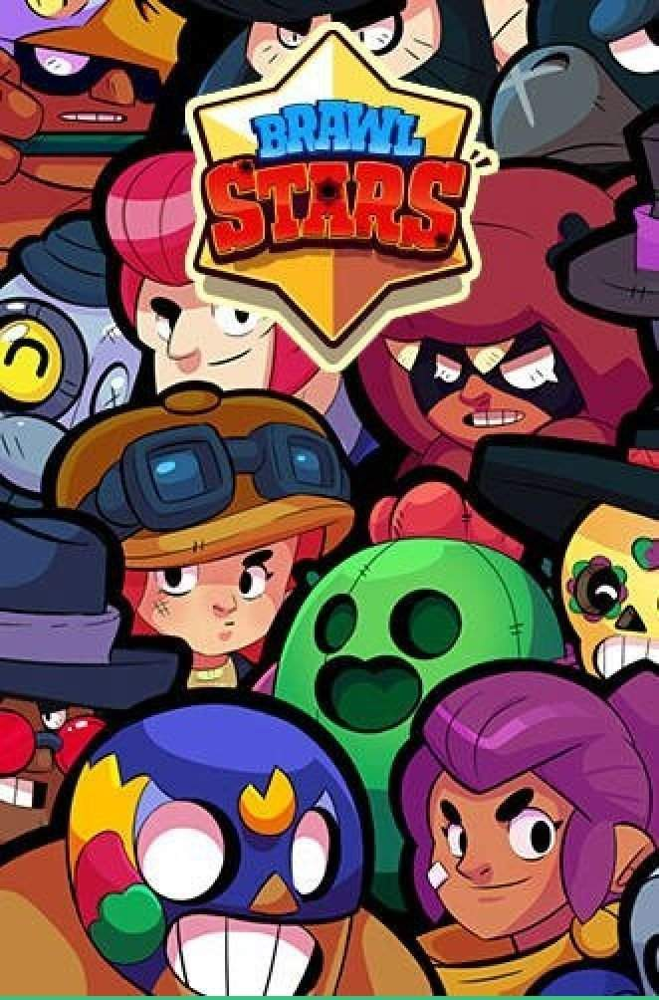
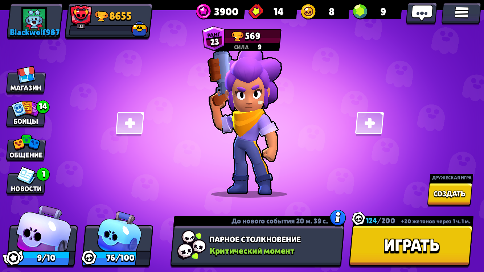
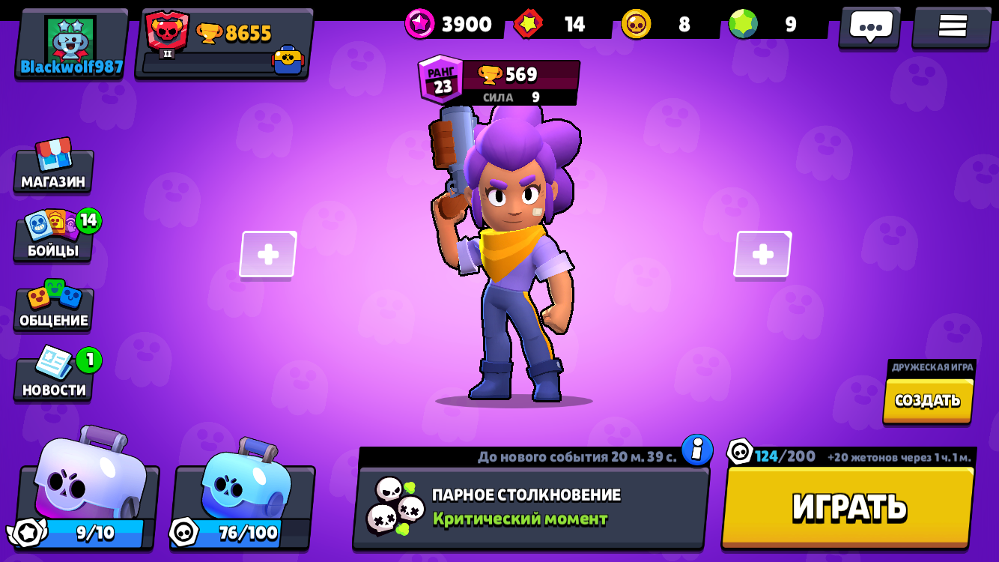

- шелли
- нита
- кольт
- роза
- поко
- барли
- ель примо
- булл
- брок
- джесси
- динамайк
- рико
- пэм
- карл
- пенни
- бо
- фрэнк
- мортис
- 8-бит
- дэррил
- тик
- эмз
- пайпер
- биби
- тара
- джин
- спайк
- ворон
- леон
- сэнди:)

Это сайт по игре brawl stars
в этой игре можно прокачивать персонажей
В Brawl Stars рейтинг игрока составляют его уровень и количество трофеев (как в Clash of Clans и Clash Royale), а сам геймплей имеет большое количество сходств с Clash Royale (например, ящики — аналог сундуков). В игре 30 персонажей, во время матча менять их невозможно.
В начале игры будет дан начальный боец, 20 бойцов можно получить, открывая ящики, а остальных — по достижении определённого количества трофеев.
В игре присутствует возможность вступать и создавать клубы (по аналогии с кланами в играх Clash of Clans и Clash Royale).
Играя в события по билетам, не расходуются трофеи, но при помощи них можно получить больше жетонов, чем с обычных событий.
персонажей можно прокочать только до 9-ого уровня, а 10-ый можно получить открывая сундуки
supercell
|
 | |
|
 
Ссылка на сайт BrawlStars

Ссылка на сайт BrawlStars